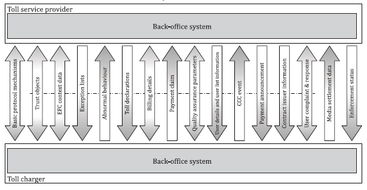

EN ISO 12855
Electronic Fee Collection – Information exchange between service provision and toll charging
Introduction¶
This technical standard (hereinafter also referred to as the "described document") specifies the interface for the exchange of data messages between the main entities (roles) of the electronic fee collection system architecture, i.e. the toll charger and the toll service provider. It establishes the complete specification of application protocol data units (APDUs), application data units (ADUs), their syntax, semantics and transfer mechanisms supporting interoperability between the back-office systems of toll chargers and toll service providers.
Note: This Extract presents selected chapters of the described document and retains the original chapter numbering.
Usage¶
The described document is intended for toll chargers and toll service providers, as it establishes the basic elements of mutual interoperability at the level of their back-end systems. The document is applicable to vehicle-related toll services including road user charging, parking and access control, independently of the charging technology used.
Scope¶
The described document defines the exchange of information between the toll charger and the toll service provider. It describes the interface functionality, as well as the complete syntax and semantics of the data messages that can be exchanged via the interface (especially trusted objects, context data, exception lists, toll declarations, billing details, enforcement data). Furthermore, transmission mechanisms and support functions are described here.
Related documents (selection)¶
The described document refers to more than 20 technical standards, the most important of which are:
ISO 14906 — Electronic fee collection — Application interface definition for dedicated short-range communication
ISO/TS 17573-2 — Electronic fee collection — System architecture for vehicle-related tolling — Part 2: Vocabulary
ISO 17573-3 — Electronic fee collection — System architecture for vehicle-related tolling — Part 3: Data dictionary
ISO 12813 — Compliance check communication for autonomous systems
ISO 13141 — Localization augmentation communication for autonomous systems
ISO 19299 — Electronic fee collection — Security framework
3 Terms and definitions¶
This clause does not introduce additional terms and definitions. For the purposes of this document, the terms and definitions given in ISO/TS 17573-2 apply.
4 Abbreviations¶
This clause contains more than 40 abbreviations related to the described document, the most important of which are the following:
ADU - application data unit
DSRC - dedicated short-range communications
EFC - electronic fee collection system; electronic fee collection
GNSS - global navigation satellite system
OBE - on-board equipment
RSE - roadside equipment
TC - toll charger
TSP - toll service provider
NOTE: Other terms and abbreviations from the ITS domain can be found in the ITSTerminology dictionary (www.itsterminology.org), the StandardLand website (www.standardland.cz) or the OBP platform (www.iso.org/obp).
5 Architectural concepts and information exchanges¶
This clause, spanning 10 pages, contains a basic description of the interface functionalities for the exchange of data messages between the toll charger and the toll service provider. The architecture is based on the reference architecture defined in ISO 17573-1 and specifies the information exchanges between the two back-office roles. The following functionalities are described:
- exchange of trust objects;
- provision of EFC context data;
- management of exception lists;
- reporting of abnormal behavior;
- reporting of toll declarations;
- reporting of billing details;
- reporting of payment claims;
- exchange of quality assurance parameters;
- reporting of CCC events;
- provision of user details and user lists;
- reporting of payment announcements;
- provision of contract issuer information;
- processing of user complaints;
- provision of media settlement data;
- reporting of enforcement status.

Figure 1 – Overview of functionalities (Fig. 3 of the source standard)
6 Computational specification¶
This clause, spanning 256 pages, contains a description of the structure of 19 application data units (ADUs) that form the data messages transmitted via the interface. This is the pivotal clause of the described document. The ADUs listed in the table below are defined sequentially.
Table 1 – Overview of ADUs (Tab. 8 of the source standard)
| Functionality | ADU type name | Description |
|---|---|---|
| Basic protocol mechanisms (see 5.2.2) | RequestAdu (see 6.4) |
Request to send ADUs from TC or TSP |
AckAdu (see 6.5) |
Acknowledgement of received ADUs by TC or TSP | |
StatusAdu (see 6.6) |
Provide a generic status information to TC or TSP | |
| Exchange trust objects (see 5.2.3) | TrustObjectAdu (see 6.7) |
Exchange keys and certificates between TC and TSP |
| Originate EFC context data (see 5.2.4) | EfcContextDataAdu (see 6.8) |
Send a formal description of the TC's toll domain from TC to TSP or information about the TSP from the TSP to the TC |
| Manage exception lists (see 5.2.5) | ExceptionListAdu (see 6.9) |
Send exception list of type block list, access list or discounted user list from TSP to TC |
| Report abnormal behaviour (see 5.2.6) | ReportAbnormalBehaviourAdu (see 6.10) |
Report abnormal behaviour of an OBE or a service user from the TC to the TSP |
| Report toll declarations (see 5.2.7) | TollDeclarationAdu (see 6.11) |
Send acquired toll declarations from the TSP to the TC |
| Report billing details (see 5.2.8) | BillingDetailsAdu (see 6.12) |
Send calculated billing details either from TC to TSP or from TSP to TC |
| Report payment claim (see 5.2.9) | PaymentClaimAdu (see 6.13) |
Send a payment claim for accepted billing details from TC to TSP |
| Exchange quality assurance parameters (see 5.2.10) | ReportQaAdu (see 6.14) |
Exchange QA parameters between TC and TSP |
| Report CCC event (see 5.2.11) | ReportCccEventAdu (see 6.16) |
Report CCC event from TC to TSP |
| Provide user & user list information (see 5.2.12) | ProvideUserDetailsAdu (see 6.15) |
Provide details on a user or vehicle from TC to TSP |
ProvideUserIdListAdu (see 6.17) |
Provide a list of related users from TSP to TC | |
| Report payment announcement (see 5.2.13) | PaymentAnnouncementAdu (see 6.18) |
Send a payment announcement for a payment from TSP to TC |
| Provide contract issuer information (see 5.2.14) | ContractIssuerListAdu (see 6.19) |
Provide information on the accepted OBE from TSP to TC |
| User complaint and response (see 5.2.15) | UserComplaintAdu (see 6.20) |
Send a user complaint from TSP to TC |
UserComplaintResponseAdu (see 6.21) |
Send the result of handling a user complaint from TC to TSP | |
| Provide media settlement data (see 5.2.16) | MediaSettlementDataAdu (see 6.22) |
Send media settlement data from TC to TSP |
| Report enforcement status (see 5.2.17) | EnforcementStatusAdu (see 6.23) |
Report enforcement status from TSP to TC |
For illustration, the definition of the ExceptionListADU data unit is provided below.
Table 2 – Data elements of ExceptionListADU (Tab. 217 of the source standard)
| Data element | Data type/data description | Status |
|---|---|---|
aduIdentifier |
AduIdentifier (see description in 6.2.4)This data element shall contain a unique identifier for this ADU. It shall be unique for each originator specified in apduOriginator in the apci of the APDU.
|
M |
exceptionListVersion |
ExceptionListVersion specified as INTEGER ranging from 0 to 263-1This data element shall contain a unique version number of the exception list. The first exception list by a TSP of each exceptionListType shall bear the number 1 and shall be incremented with each new version by 1.
|
M |
exceptionListType |
ExceptionListType (see Table 218) specified as INTEGER ranging from 0 to 255This data element shall contain the type of exception list. |
M |
exceptionValidityStart |
GeneralizedTimeThis data element may optionally contain a point in time in the future from which the exception list is valid. The exception list shall become valid immediately on processing if this data element is not provided or if it contains a time in the past. |
O |
exceptionValidityEnd |
GeneralizedTimeThis data element may optionally contain a point in time in the future from which the exception list is no longer valid. NOTE It is not recommended to use this data element for block lists or access lists to avoid a situation where an exception list is no longer valid before a new exception list is sent and processed by the TC. |
O |
exceptionListEntries |
List (ASN.1 SEQUENCE OF) of zero or more elements of data type ExceptionListEntry (see Table 219)This data element shall contain the TSPs exceptions. A list with zero elements means that there are no entries in the exception list. If no exceptionListEntries are available, the data element shall be sent with zero elements (empty list).A TSP may send an empty access list if it has no active user contracts for the toll context of the TC. |
M |
actionCode |
ActionCode (see Table 10)This data element may optionally be used to indicate specific actions performed by the sender of the request. Only the values send, resend and respond are allowed.
|
O |
actionRequest |
ActionCode (see Table 11)This data element may optionally be used to indicate specific actions to be pursued by the receiver of the request. Only the values process and wait are allowed.
|
O |
Individual data types are explained sequentially in the text, or their definition is provided. For illustration, the definition of the ExceptionListEntry data type is provided below.
Table 3 – Data elements of ExceptionListEntry (Tab. 219 of the source standard)
| Data element | Data type/data description | Status |
|---|---|---|
userId |
UserId (see Table 12)This data element shall contain the parameters of the user. |
M |
replacedUserId |
UserId (see Table 12)This data element may optionally contain parameters of the user, that replace the parameters stated in the data element userId.EXAMPLE Change of licence plate |
O |
statusType |
ExceptionListStatusType (see Table 220) specified as INTEGER ranging from 0 to 255This data element may optionally contain an additional limitation for the exception list entry. |
O |
reasonCode |
List (ASN.1 SEQUENCE OF) of one or more elements of data type ExceptionListReasonCode (see Table 221) specified as INTEGER ranging from 0 to 255This data element shall contain a list of reasons for this exception list entry. |
M |
entryValidityStart |
GeneralizedTimeThis data element may optionally contain a point in time in the future from which the exception list entry is valid. The exception list entry shall become valid immediately on processing if this data element is not provided or if it contains a time in the past. |
O |
entryValidityEnd |
GeneralizedTimeThis data element may optionally contain a point in time in the future from which the exception list entry is no longer valid. This data element shall only be used if the data element exceptionListType in the ExceptionListAdu contains the value discountedListFull or discountedListIncremental to indicate the end of applicability of a discount for a user.
|
O |
vehicleParameters |
VehicleParameters (see Table 222)This data element may optionally contain vehicle-specific information about the vehicle indicated in data element userId.
|
O |
vehicleParametersAuthenticator |
AuthenticatorEfc (see Table 16)This data element may optionally contain an authenticator calculated over the content of the data element vehicleParameters.
|
O |
actionRequested |
ExceptionListActionType (see Table 223) specified as INTEGER ranging from 0 to 255This data element may optionally contain the action the TSP requests from the TC for an exception list entry. NOTE 1 The support of the TC for an action requested by the TSP needs to be agreed bilaterally between the TC and the TSP. |
O |
mediaProviderId |
Provider (imported from ISO 17573-3)This data element may optionally contain an identifier of the issuer of the ICC. This data element shall only be stated if the data element exceptionListType in the ExceptionListAdu contains the value iccListFull or iccListIncremental.
|
O |
applicableDiscounts |
List (ASN.1 SEQUENCE OF) of one or more elements of data type ApplicableDiscounts (see Table 224)This data element may optionally contain a list of eligible discounts for the user indicated in userId.This data element shall only be stated if the data element exceptionListType in the ExceptionListAdu contains the value discountedListFull or discountedListIncremental.The data element shall not be sent if no discounts are applicable for the user indicated in userId.
|
O |
costCentre |
UTF8String SIZE (1..16)This data element may optionally contain user-related cost centre information to be stated in the billing details. |
O |
identificationType |
IdentificationType (see Table 225) specified as INTEGER ranging from 0 to 255This data element may optionally contain information about the device provided to the user by the TSP for means of identification. NOTE 2 It can be used as a fall-back method to identify the user by the TC. |
O |
7 Transfer mechanisms and supporting functions¶
This clause, spanning 3 pages, establishes recommendations regarding the use of a secure communication channel, data encoding, message authentication, and message signing algorithms.
Annex A (normative) – Data type specifications¶
Annex A, spanning 1 page, provides the specification of the data types used according to ASN.1. A reference is provided here to the relevant ASN files, which can be imported into other application modules.
Annex B (informative) – Example enforcement process applying standardized APDU exchanges¶
Annex B, spanning 5 pages, describes the enforcement process. The process is illustrated using an activity diagram capturing the steps implemented on the side of the toll charger and the toll service provider, as well as the exchanged data messages.
Annex C (informative) – Example of data flows in a toll domain¶
Annex C, spanning 3 pages, describes an example of a data flow in a toll domain. The example is illustrated using a sequence diagram capturing the data exchange between the toll charger, on-board equipment (OBE), toll ser-vice provider, and user.
Annex D (informative) – Example of rounding differences¶
Annex D, spanning 4 pages, illustrates using the EasyGo example how rounding of amounts from aggregated toll transactions can be approached when creating billing details.
Annex E (informative) – Fee calculation using EFC context data¶
Annex E, spanning 4 pages, provides an example of toll calculation based on tariff table information, toll context information, and toll domain usage information.